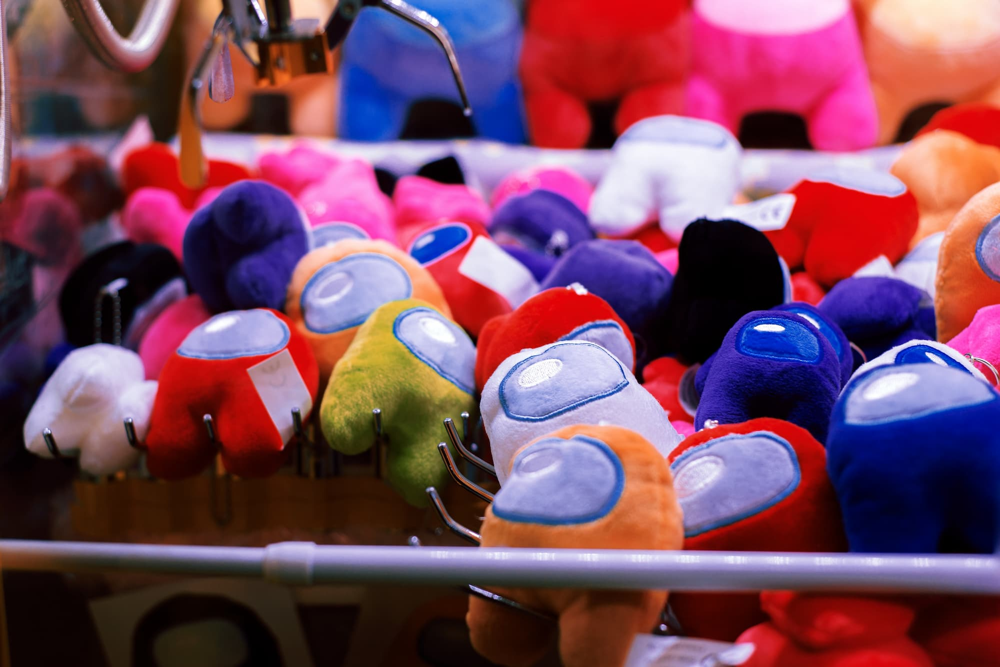

Among Us - El juego que trascendió
Among Us es un videojuego de género party y multijugador en línea desarrollado por la compañía estadounidense InnerSloth y distribuido entre junio y noviembre de 2018 para las plataformas Android, iOS y PC.
A diferencia de otros juegos, Among Us se viralizó en el corto tiempo, y pasó a ocupar un relato en el mundo transmediático, apareciendo en revistas, libros, cortos y hasta merchandising de todo tipo.
